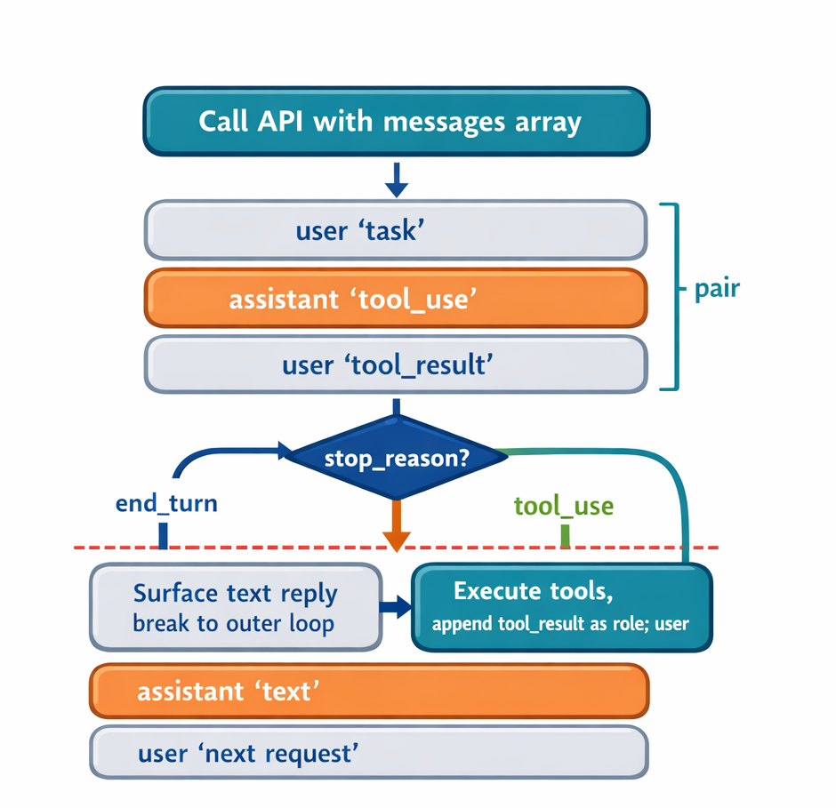

Module 4 introduced context management as a set of concepts. Module 6 built an agent that actually accumulates context — a messages array that grows with every user request, every model response, and every tool result. Lecture 6.4 added instrumentation so the agent can see that growth: the TokenTracker reads usage.input_tokens and usage.output_tokens from every API response. This lecture connects the two. It takes the simplest of Module 4's strategies — the sliding window — and writes the real implementation that runs when the token budget is about to be exceeded.
The sliding window is the easiest strategy to describe and the easiest to get subtly wrong. Describing it takes one line: keep the last N messages, drop the rest. Implementing it correctly requires respecting two structural constraints of the Messages API that a naive slice ignores. Those constraints, and the small amount of code needed to satisfy them, are the substance of this lecture.
Sliding window is not triggered by a message count. It is triggered by tokens. The agent watches the token usage reported by the model on each response, and when the conversation approaches the model's context limit — typically a percentage threshold like 75% or 85% — it takes a proactive step to prune the conversation before the next call. The number itself is a lookup: you need to know the context window of the model you are using and pick a fraction of it as the trigger.
This distinction matters because messages and tokens are not the same unit. A user message might be the single word "continue"; a tool result might be megabytes of file contents. Trimming a fixed number of messages is therefore an approximation of trimming tokens. Cutting a 50-message conversation down to its last 25 messages does not cut the token count in half — but it does reduce it by some amount, and that is enough to bring the conversation back under budget. Sliding window manages a token problem with a message-level tool, and accepting that imprecision is part of using it.
The agent has two loops, established back in Lecture 6.1. The outer loop runs once per user turn: it takes the user's request and ultimately returns the model's final response. Inside it, the inner loop runs once per API call — it sends the conversation, and if the model responds with a tool_use request, it executes the tool, appends the result as a user message, and calls the model again. The inner loop repeats until the model stops asking for tools and produces its final answer. Context grows on every iteration of that inner loop.
The right place to manage context is at the top of the inner loop, before each API call:
outer loop — one pass per user turn
append user message
inner loop — one pass per API call
[HOOK: manage context here]
response = client.messages.create(...)
if stop_reason == "tool_use":
execute tools, append results # → inner loop repeats
else:
break # → turn done
Two properties make this the correct hook point. First, it runs before every API call, so it catches context growth that happens within a single turn. A coding agent can issue a long sequence of tool calls in response to one user request; if context were managed only once per user turn, that intra-turn growth would go unchecked. Second, at the top of the inner loop the messages array is always in a complete state — the last message is either a real user input or a closed tool_use/tool_result pair, never a dangling tool request. That completeness is what makes truncation safe, for reasons that become clear below.
In the real agent the integration is a single line at the top of the inner loop:
messages = manage_context(messages, usage_tracker)
manage_context is the dispatcher that decides whether the threshold has been crossed and, if so, which strategy to apply. This lecture builds the sliding-window strategy that lives behind it.
The one-line version from Module 4 is syntactically valid and runs without error:
def sliding_window(messages, n):
return messages[-n:]
It will also break the agent, usually within the first few times it runs. The reason is that the messages array has structure, and a blind slice ignores it. Every interaction with the Messages API must satisfy two constraints.

Constraint 1 — Pair integrity. When the model issues a tool_use block, the next message must contain the matching tool_result. The two are a unit. If a slice lands between them, the surviving conversation contains a tool_result whose originating tool_use is gone, and the API rejects the next request:
400 Bad Request: messages: tool_use ids found without
tool_result blocks immediately after
This is not a rare edge case. In a multi-step agent session, roughly half of all messages carry tool_result blocks, so a randomly placed cut has a high chance of splitting a pair.
Constraint 2 — Alternating roles. The API also requires user and assistant messages to alternate. Two user messages in a row, or two assistant messages in a row, are rejected. A contiguous tail slice satisfies this automatically, because the original conversation already alternates — but the constraint becomes relevant once anchor preservation is added, because prepending a message can create an adjacent same-role pair.
Both problems have the same fix shape: instead of cutting blindly, walk the conversation and cut only at a position that keeps the array valid, then run a small repair pass for the roles.
The key idea is the notion of a safe boundary. A cut is safe if the message that becomes the new first message is a user message that is not a tool result — in other words, a real user input. Such a message is always a valid way to begin a conversation, and cutting before it cannot orphan a tool_result.
[5] assistant: text + tool_use ← cannot cut after (orphans the result)
[6] user: tool_result ← cannot cut before (orphaned result)
[7] assistant: text
[8] user: "Now update models/user.py" ← SAFE to cut before this
The check is mechanical: the agent already has every message's role in the array, and for a user message it can inspect the content blocks to see whether any is a tool_result. In the demo this is is_safe_boundary:
def is_safe_boundary(messages, index):
"""A safe boundary is a user message whose content is not a tool_result."""
if index >= len(messages):
return True
msg = messages[index]
if msg["role"] != "user":
return False
if isinstance(msg["content"], str):
return True # a real (string) user input
for block in msg["content"]:
if isinstance(block, dict) and block.get("type") == "tool_result":
return False # tool_result → not a boundary
return True
The algorithm computes the candidate cut at len(messages) - keep_last_n, then walks forward — toward the end of the conversation — until it finds the first safe boundary. Walking forward rather than backward is deliberate: the entire purpose is to reduce context, so when the requested cut point is unsafe the function moves toward keeping fewer messages, never more. The consequence is that the window may end up smaller than the N you asked for. That is the function working correctly. There is no value in keeping the exact requested count if the API rejects the result; correctness wins over hitting the number.
A second problem is specific to sliding window, and it is the strategy's defining weakness. Consider a long session that begins with the user stating the goal — "Refactor the database layer to use connection pooling" — followed by twenty or thirty messages of work. When the window slides and keeps only the recent tail, the original instruction is dropped. The model has no memory of its own; the only thing it knows about the conversation is whatever is in the messages array sent on the current call. If the goal has scrolled out, it is gone.
The failure can be severe. Suppose the new first message after trimming is "Yes, continue" — a user's earlier approval of some sub-step. The model now receives a conversation that opens with "Yes, continue" and no statement of what is being worked on. The original intent — refactor, don't redesign — has vanished, and the agent may strike off in a new direction.
Sliding window cannot fully solve this; anything outside the window is lost, and that is inherent to the strategy. But it can make an educated guess. The first user message is, in most sessions, the task description — the anchor of the whole conversation. So when the window would otherwise drop it, the function prepends the first user message to the trimmed window. This costs one message and preserves the goal for the rest of the session. The guess is only as good as the anchor: if the conversation opened with "Hey, how are you" rather than a real task statement, anchoring preserves nothing useful. Lecture 7.2 addresses this limitation directly with explicit tagging.
Prepending the anchor introduces the alternating-roles problem from earlier. The pair-aware walk always lands on a user message — that is the safe-boundary rule. Prepending the anchor, also a user message, produces two user messages in a row, which the API rejects:
[anchor] user: "Refactor the database layer..."
[???] ← two user messages adjacent
[cut+0] user: "Now update models/user.py..."
The fix exploits the same fact that caused the goal-loss problem: the model has no memory, so the conversation can be edited freely as long as the result is internally consistent. The function inserts a brief synthetic acknowledgment in the assistant role between the two user messages — a fabricated "Understood." that the model never actually said. It costs almost nothing in tokens and restores the alternation:
[anchor] user: "Refactor the database layer..."
[ack] assistant: "Understood." ← inserted, never actually said
[cut+0] user: "Now update models/user.py..."
[cut+1] assistant: ...
In the demo this is ensure_alternating_roles, a single pass that walks the kept list and inserts an opposite-role acknowledgment wherever two same-role messages are adjacent:
def ensure_alternating_roles(messages):
if not messages:
return messages
result = [messages[0]]
for msg in messages[1:]:
if msg["role"] == result[-1]["role"]:
ack_role = "assistant" if msg["role"] == "user" else "user"
ack_text = "Understood." if ack_role == "assistant" else "Continue."
result.append({"role": ack_role, "content": ack_text})
result.append(msg)
return result
Pulling is_safe_boundary and ensure_alternating_roles out as separate helpers is not incidental. The next lecture's selective-preservation strategy reuses both: it has the same pair-integrity obligation and can produce the same role-adjacency issues.
The full sliding_window function combines the two passes. It returns early if the conversation is already short enough, finds a safe cut by walking forward, prepends the anchor when needed, and finishes with the alternating-roles repair:
def sliding_window(messages, keep_last_n, preserve_anchor=True):
if len(messages) <= keep_last_n:
return list(messages)
cut = len(messages) - keep_last_n
while cut < len(messages) and not is_safe_boundary(messages, cut):
cut += 1
kept = messages[cut:]
if preserve_anchor and messages and messages[0]["role"] == "user":
if cut > 0:
kept = [messages[0]] + kept
return ensure_alternating_roles(kept)
The standalone demo in sliding_window.py runs this against a hand-built sample conversation — a refactoring session with interleaved tool_use/tool_result pairs — and prints three results. The conversation is constructed so that a request to keep the last six messages lands the naive cut squarely on a tool_result, demonstrating each behavior:
messages[-6:] begins on a tool_result whose tool_use is gone. This is the 400-error case.Comparing the second and third outputs is the point of the demo: anchoring is what turns a technically valid but contextually amnesiac window into one the model can actually work from.
A few practical clarifications follow from the design. The system prompt is never passed through this function — the Messages API takes it as a separate system= parameter, outside the messages array, so truncation never touches it. The first user message cannot itself contain a tool_result, because such blocks only appear in responses to a model's tool_use; the first message in any conversation is always a real user input, which is why anchoring on it is safe. And anchoring on a single message is usually sufficient — if a session has several major pivots, the right tool is explicit tagging, which is the subject of the next lecture.
Sliding window establishes the pattern that the rest of Module 7 builds on. There is one hook point: the top of the inner loop, before each API call, where the messages array is in a complete state. There are two API constraints every context-management strategy must respect: pair integrity (a tool_use keeps its tool_result) and alternating roles (no two same-role messages adjacent). The safe cut is found by walking forward to a user message that is not a tool result, which trades exact window size for guaranteed validity. The goal is protected by prepending the first user message as an anchor and stitching it in with a synthetic acknowledgment.
Sliding window is effective at shrinking context, but it is lossy: everything between the anchor and the recent tail is discarded. A critical decision or constraint stated in the middle of a long session is simply gone. The next lecture, on selective preservation, keeps messages that matter regardless of their age — the first step toward losing less while still managing the budget.